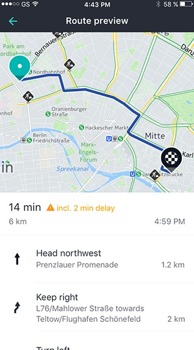
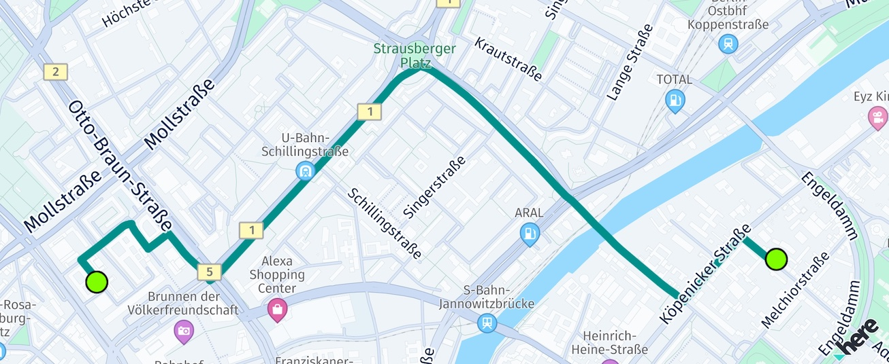
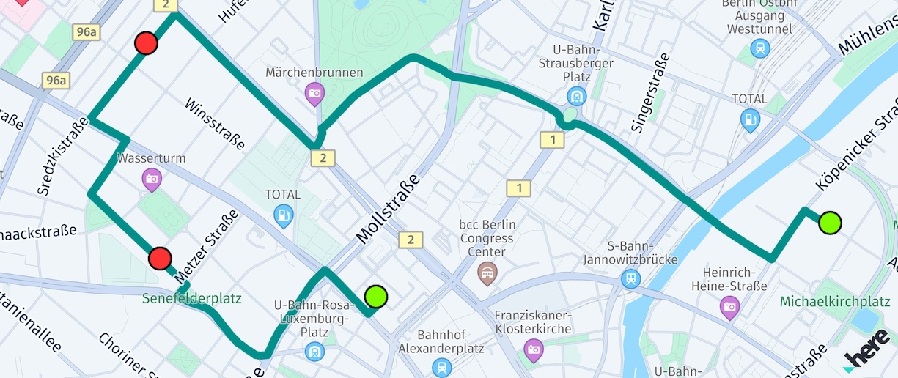
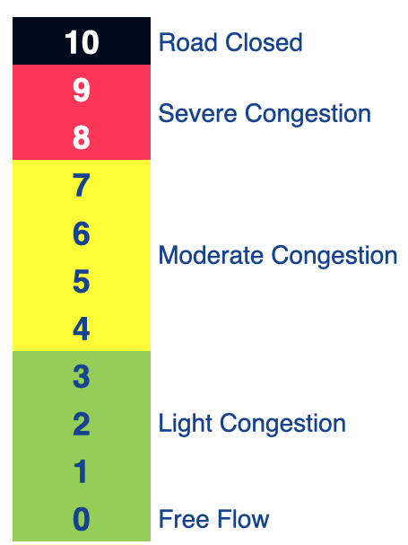
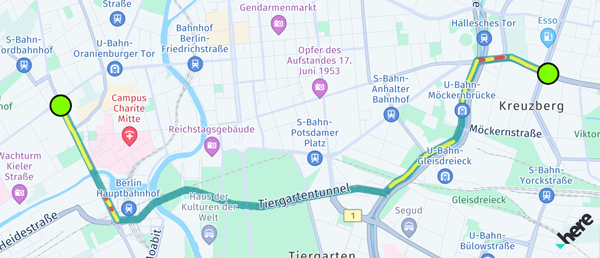

Add UI building blocks
This section presents various UI elements and related code snippets that are already available as part of the HERE SDK offering. From maneuver instructions and maneuver icon assets to visual route representation, discover how to integrate these elements into your application interface. More reusable UI building blocks are planned for the future.
Get maneuver instructions
Each Section of a Route object contains maneuver instructions a user may need to follow to reach the destination. For each turn, a Maneuver object contains an action and the location where the maneuver must be taken. The action may indicate actions like "depart" or directions such as "turn left".
List<Section> sections = route.sections;
for (Section section in sections) {
_logManeuverInstructions(section);
}
And here is the code to access the maneuver instructions per section:
void _logManeuverInstructions(Section section) {
print("Log maneuver instructions per route section:");
List<Maneuver> maneuverInstructions = section.maneuvers;
for (Maneuver maneuverInstruction in maneuverInstructions) {
ManeuverAction maneuverAction = maneuverInstruction.action;
GeoCoordinates maneuverLocation = maneuverInstruction.coordinates;
String maneuverInfo = maneuverInstruction.text +
", Action: " +
maneuverAction.toString() +
", Location: " +
maneuverLocation.toString();
print(maneuverInfo);
}
}
This may be useful to easily build maneuver instructions lists describing the whole route in written form. For example, the ManeuverAction enum can be used to build your own unique routing experience.

Note
The attributes maneuverInstruction.roadTexts, maneuverInstruction.nextRoadTexts and maneuverInstruction.exitSignTexts are only available for users of editions such as the Navigate Edition as they are meant to be shown as part of turn-by-turn maneuvers during navigation. If taken from a Route instance, these attributes are always empty.
In the API Reference you can find an overview of the available maneuver actions.
The below table shows all ManeuverAction items with a preview description and an asset example. Note that the HERE SDK itself does not ship with maneuver icons. The assets are available as SVGs or solid PNGs in different densities as part of the open-source HERE Icon Library.
The available maneuver actions are sorted in the order as they appear in the API Reference:
Note that for now, the HERE assets for leftRoundaboutPass and rightRoundaboutPass are only available as SVGs - and some maneuver assets are only available in the sub-folder "wego-fallback-roundabout". For the PNG representation, also the MSDKUI open-source project can be used as a fallback.
Get road shield icons for maneuver preview
With iconProvider.createRoadShieldIcon(...) you can asynchronously create a Bitmap that depicts a road number such as "A7" or "US-101" - as it already appears on the map view.
The creation of road shield icons happens offline and does not require an internet connection. The data you need to create the icons is taken solely from the Route itself, but can be filled out also manually.

An example implementation of road shield display for maneuver previews is part of the "reroutingapp" example. To get it, visit the example app repository on GitHub. Note that it requires the _Navigate Edition, but the code for the IconProvider can be also used by other editions, for example, to show road shield icons as part of a route preview.
Show the route on the map
Below is a code snippet that shows how to show a route on the map by using a MapPolyline that is drawn between each coordinate of the route including the starting point and the destination:
_showRouteOnMap(here.Route route) {
// Show route as polyline.
GeoPolyline routeGeoPolyline = route.geometry;
double widthInPixels = 20;
Color polylineColor = const Color.fromARGB(160, 0, 144, 138);
MapPolyline routeMapPolyline;
try {
routeMapPolyline = MapPolyline.withRepresentation(
routeGeoPolyline,
MapPolylineSolidRepresentation(
MapMeasureDependentRenderSize.withSingleSize(RenderSizeUnit.pixels, widthInPixels),
polylineColor,
LineCap.round));
_hereMapController.mapScene.addMapPolyline(routeMapPolyline);
} on MapPolylineRepresentationInstantiationException catch (e) {
print("MapPolylineRepresentation Exception:" + e.error.name);
return;
} on MapMeasureDependentRenderSizeInstantiationException catch (e) {
print("MapMeasureDependentRenderSize Exception:" + e.error.name);
return;
}
}
The first screenshot below shows a route without additional waypoints - and therefore only one route section. Starting point and destination are indicated by green-circled map marker objects. Note that the code for drawing the circled objects is not shown here, but can be seen from the example's source code, if you are interested.

The second screenshot shows the same route as above, but with two additional stopover-waypoints, indicated by red-circled map marker objects. The route therefore, contains three route sections.

Additional stopover-waypoints split a route into separate sections and force the route to pass these points and to generate a maneuver instruction for each point.
Note that internally, rendering of the MapPolyline is optimized for very long routes. For example, on a higher zoom level, not every coordinate needs to be rendered, while for lower zoom levels, the entire route is not visible. The algorithm for this is not exposed, but the basic principle can be seen in the flexible-polyline open-source project from HERE.
Zoom to the route
For some use cases, it may be useful to zoom to the calculated route. The camera class provides a convenient method to adjust the viewport so that a route fits in:
GeoBox routeGeoBox = route!.boundingBox;
// Keep default orientation for bearing and tilt.
_hereMapController.camera.lookAtAreaWithGeoOrientation(routeGeoBox, GeoOrientationUpdate(null, null));
Here we use the enclosing bounding box of the route object. This can be used to instantly update the camera: zoom level and target point of the camera will be changed, so that the given bounding rectangle fits exactly into the viewport. Additionally, we can specify an orientation to specify more camera parameters - here we keep the default values. Note that calling lookAtAreaWithOrientation() will instantly change the view.
For most use cases, a better user experience is to zoom to the route with an animation. Below you can see an example that zooms to a GeoBox plus an additional padding of 50 pixels:
void _animateToRoute(here.Route route) {
// The animation results in an untilted and unrotated map.
double bearing = 0;
double tilt = 0;
// We want to show the route fitting in the map view with an additional padding of 50 pixels.
Point2D origin = Point2D(50, 50);
Size2D sizeInPixels = Size2D(_hereMapController.viewportSize.width - 100, _hereMapController.viewportSize.height - 100);
Rectangle2D mapViewport = Rectangle2D(origin, sizeInPixels);
// Animate to the route within a duration of 3 seconds.
MapCameraUpdate update = MapCameraUpdateFactory.lookAtAreaWithGeoOrientationAndViewRectangle(route.boundingBox,
GeoOrientationUpdate(bearing, tilt),
mapViewport);
MapCameraAnimation animation = MapCameraAnimationFactory.createAnimationFromUpdateWithEasing(
update, const Duration(milliseconds: 3000), here.Easing(here.EasingFunction.inCubic));
_hereMapController.camera.startAnimation(animation);
}
The `CameraKeyframeTracks` example app shows how this can look like.
Render a polyline adjacent to traffic flow
By default, the HERE SDK provides the color encoding used for the traffic flow layer which indicates the traffic. Using MapMeasureDependentRenderSize you can define the rendering width size of your polyline based on the MapMeasure.Kind such that it renders your polyline adjacent to these traffic polylines.

Here's an example to implement it:
// Show route as polyline.
GeoPolyline routeGeoPolyline = route.geometry;
Color polylineColor = const Color.fromARGB(255, 13, 97, 222);
Color outlineColor = const Color.fromARGB(255, 11, 83, 191);
MapPolyline routeMapPolyline;
try {
// Below, we're creating an instance of MapMeasureDependentRenderSize. This instance will use the scaled width values to render the route polyline.
// We can also apply the same values to MapArrow.setMeasureDependentTailWidth().
// The parameters for the constructor are: the kind of MapMeasure (in this case, ZOOM_LEVEL), the unit of measurement for the render size (PIXELS), and the scaled width values.
MapMeasureDependentRenderSize mapMeasureDependentLineWidth =
MapMeasureDependentRenderSize(MapMeasureKind.zoomLevel,
RenderSizeUnit.pixels, getDefaultLineWidthValues());
// We can also use MapMeasureDependentRenderSize to specify the outline width of the polyline.
double outlineWidthInPixel = 1.23 * _hereMapController.pixelScale;
MapMeasureDependentRenderSize mapMeasureDependentOutlineWidth =
MapMeasureDependentRenderSize.withSingleSize(
RenderSizeUnit.pixels, outlineWidthInPixel);
routeMapPolyline = MapPolyline.withRepresentation(
routeGeoPolyline,
MapPolylineSolidRepresentation.withOutline(
mapMeasureDependentLineWidth,
polylineColor,
mapMeasureDependentOutlineWidth,
outlineColor,
LineCap.round));
_hereMapController.mapScene.addMapPolyline(routeMapPolyline);
_mapPolylines.add(routeMapPolyline);
} on MapPolylineRepresentationInstantiationException catch (e) {
print("MapPolylineRepresentation Exception:" + e.error.name);
return;
} on MapMeasureDependentRenderSizeInstantiationException catch (e) {
print("MapMeasureDependentRenderSize Exception:" + e.error.name);
return;
}
The width values specified for MapMeasureDependentRenderSize are linearly interpolated between each successive pair of data points. It can be generated like this:
// Returns a map where the key is the zoom level and the value is the corresponding scaled width.
Map<double, double> getDefaultLineWidthValues() {
Map<double, double> widthsPerZoomLevel = {};
// Here width value will remain 2.18 from 0.0 zoom level to 6.0.
// From 6.0 the updated value 2.48 will be used.
double pixelScale = _hereMapController.pixelScale;
widthsPerZoomLevel[0.0] = 2.18 * pixelScale;
widthsPerZoomLevel[6.0] = 2.48 * pixelScale;
widthsPerZoomLevel[7.0] = 2.78 * pixelScale;
widthsPerZoomLevel[11.0] = 3.1 * pixelScale;
widthsPerZoomLevel[16.0] = 3.15 * pixelScale;
widthsPerZoomLevel[17.0] = 3.35 * pixelScale;
widthsPerZoomLevel[18.0] = 3.78 * pixelScale;
widthsPerZoomLevel[19.0] = 6.5 * pixelScale;
widthsPerZoomLevel[20.0] = 10.2 * pixelScale;
widthsPerZoomLevel[24.0] = 77.5 * pixelScale;
return widthsPerZoomLevel;
}
Render custom traffic along a route
As an alternative to rendering the route's polyline adjacent to traffic flow (see above), you can also render the traffic yourself. Note that this approach may be perceived as less accurate because the traffic information includes predictive data from the route instead of the real-time information provided by the traffic flow schemes. However, similar to the color encoding used for the traffic flow layer, you can indicate the traffic along a route using a trafficSpeed.jamFactor that ranges from 0 (no traffic) to 10 (road is blocked). Each Section of a Route can contain various TrafficSpeed instances.
An example how this value can be mapped to a suitable color is shown below:

Usually, the jamFactor can be interpreted like this:
- 0 <=
jamFactor< 4: No or light traffic. - 4 <=
jamFactor< 8: Moderate or slow traffic. - 8 <=
jamFactor< 10: Severe traffic. jamFactor= 10: No traffic, that is the road is blocked.
Note
Note that the jamFactor indicating TrafficSpeed is calculated piecewise-linear from the ratio of trafficSpeedInMetersPerSecond / baseSpeedInMetersPerSecond - without taking road types and other parameters into account. Therefore, the provided jamFactor does not necessarily match exactly the traffic flow visualization on the map view (if enabled). On top, the RoutingEngine uses predictive location services to predict upcoming traffic while traversing the route - whereas the traffic flow visualization represents only the current point in time (real time). Also, worth to mention, the prerendered traffic flow may use a different color representation based on the current zoom level.
It is an app decision whether to prefer predicted traffic along a route that matches the given ETA - or to show instead the real-time traffic situation, which might not be accurate any more when reaching a destination in the future.
The recommended approach for the latter is to show the route and the traffic-flow side-by-side by using a map-measure dependent width for the route's polyline - instead of rendering the traffic additionally on the route itself.

If you want to visualize the traffic along a route, consider to render multiple colored MapPolyline objects for each span of a section:
// This renders the traffic jam factor on top of the route as multiple MapPolylines per span.
_showTrafficOnRoute(here.Route route) {
if (route.lengthInMeters / 1000 > 5000) {
print("Skip showing traffic-on-route for longer routes.");
return;
}
for (var section in route.sections) {
for (var span in section.spans) {
DynamicSpeedInfo? dynamicSpeed = span.dynamicSpeedInfo;
Color? lineColor = _getTrafficColor(dynamicSpeed?.calculateJamFactor());
if (lineColor == null) {
// We skip rendering low traffic.
continue;
}
double widthInPixels = 10;
MapPolyline trafficSpanMapPolyline;
try {
trafficSpanMapPolyline = new MapPolyline.withRepresentation(
span.geometry,
MapPolylineSolidRepresentation(
MapMeasureDependentRenderSize.withSingleSize(RenderSizeUnit.pixels, widthInPixels),
lineColor,
LineCap.round));
_hereMapController.mapScene.addMapPolyline(trafficSpanMapPolyline);
_mapPolylines.add(trafficSpanMapPolyline);
} on MapPolylineRepresentationInstantiationException catch (e) {
print("MapPolylineRepresentation Exception:" + e.error.name);
return;
} on MapMeasureDependentRenderSizeInstantiationException catch (e) {
print("MapMeasureDependentRenderSize Exception:" + e.error.name);
return;
}
}
}
}
// Define a traffic color scheme based on the route's jam factor.
// 0 <= jamFactor < 4: No or light traffic.
// 4 <= jamFactor < 8: Moderate or slow traffic.
// 8 <= jamFactor < 10: Severe traffic.
// jamFactor = 10: No traffic, that is the road is blocked.
// Returns null in case of no or light traffic.
Color? _getTrafficColor(double? jamFactor) {
if (jamFactor == null || jamFactor < 4) {
return null;
} else if (jamFactor >= 4 && jamFactor < 8) {
return Color.fromARGB(160, 255, 255, 0); // Yellow
} else if (jamFactor >= 8 && jamFactor < 10) {
return Color.fromARGB(160, 255, 0, 0); // Red
}
return Color.fromARGB(160, 0, 0, 0); // Black
}
Note that we skip traffic rendering for longer routes due to performance reasons - since in this example each span with traffic is rendered as a separate polyline.
Note
Alternatively, you can show the traffic flow scheme on the map side-by-side with the route's polyline. To ensure that the route is not covering the traffic flow lines, set a measure-dependent width based on the current zoom level for MapPolyline and MapArrow.
In addition, you can query traffic incidents along the route with the
TrafficEngine. For this, you need to create aGeoCorridorout from the coordinates of aRoute. Make sure to also specify a corridor radius by settinghalfWidthInMeters. Note that theGeoCorridoris limited in length and width. Check the traffic example app to see how to use theTrafficEngine. Check also the Traffic section in this guide.If you are only interested in basic traffic incident information along the route, you can get a summary of the traffic situation directly from the
Routeinstance - perSection, by callingSection.getTrafficIncidents(). The resultingTrafficIncidentOnRouteobject contains a small subset of the data that is available with theTrafficEngine, but it can be useful to give a first overview.
In addition to render traffic on route, you can also show the traffic incidents as icons based on the TrafficIncidentType. The following categories are delivered as part of the Route object:
accident: Traffic accident.congestion: Traffic jam.construction: Construction work.disabledVehicle: Overturned or broken down vehicle(s) on the road.laneRestriction: A lane restriction.massTransit: Incident involving mass transit such as rail or subway.plannedEvent: Incident involving activities such as sport events or festivals.roadClosure: Road closure.roadHazard: Dangerous obstruction on the road such as downed tree or traffic light out.weather: Adverse weather conditions.other: The incident is known but it doesn't fit into any of the other categories.unknown: No specific incident type is provided.
Note that the HERE SDK does not expose such icon assets, but you can enable the trafficIncidents map feature layer to show all incidents with an icon on the map. Similarly, you can also enable a trafficFlow layer to show the general traffic flow on the streets. Take a look at the Traffic section for more details.
Completely disable traffic optimization
As stated above, the RoutingEngine uses predictive location services to anticipate upcoming traffic conditions. This means that the routes generated can change dynamically based on real-time traffic data, leading to different route shapes.
Usually, traffic optimization is desired, but if you are, for example, a bus driver, you cannot choose better routes as you have to follow a pre-defined bus route.
The HERE SDK provides a feature called TrafficOptimizationMode to manage this. If you prefer stable routes and are not concerned about traffic conditions, you can completely disable traffic optimization by choosing TrafficOptimizationMode.disabled. It can be achieved like this:
CarOptions carOptions = CarOptions();
carOptions.routeOptions.trafficOptimizationMode = TrafficOptimizationMode.disabled;
Note that disabling TrafficOptimizationMode will also disable any traffic information from the Route and the ETA will not include potential delays.